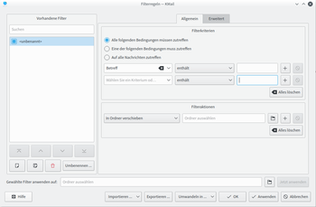
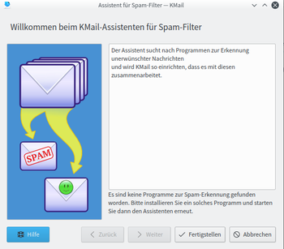
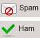

Filter
Dieser Artikel wurde für die folgenden Ubuntu-Versionen getestet:
Ubuntu 16.04 Xenial Xerus
Ubuntu 14.04 Trusty Tahr
Zum Verständnis dieses Artikels sind folgende Seiten hilfreich:
Gerade bei sehr viel E-Mail-Verkehr kann es sich anbieten, eingehende Nachrichten automatisch filtern und dabei bestimmte Aktionen ausführen zu lassen. Diese Seite beschreibt einerseits, wie man E-Mails in KMail automatisch von Filtern verwalten lassen kann. Außerdem hilft sie beim Einrichten eines Spam-Filters.
Hinweis:
Filter werden in der Reihenfolge abgearbeitet, in der die Filter im Einrichtungsdialog angeordnet sind. Die Reihenfolge kann mithilfe der Pfeiltasten unterhalb der Filterliste geändert werden. Nach der Standardeinstellung wird eine von einem Filter bearbeitete Nachricht aussortiert und durchläuft die nachfolgenden Filter nicht mehr. Die vorderen Filter haben also Vorrang vor den hinteren.
Nachrichtenfilter¶
Dieser Abschnitt beschäftigt sich mit der Filterung der Nachrichten nach dem Abruf vom Server auf die lokale Festplatte. In der Regel wendet KMail die Filter auf eingehende Nachrichten automatisch an. Allerdings kann man E-Mails auch manuell durch einen Filter schicken. Hierzu  auf eine oder mehrere markierte Nachrichten und wählt "Filter anwenden → ...".
auf eine oder mehrere markierte Nachrichten und wählt "Filter anwenden → ...".
Filter einrichten¶
|  |
| Filter-Einrichtungsassistent |
Es gibt zwei Möglichkeiten, einen Nachrichtenfilter zu erstellen. Zur schnellen Einrichtung eines einfachen Filters auf eine Nachricht. Dort wählt man "Filter anlegen" und daraufhin eine der Optionen "Nach Betreff filtern", "Nach Absender filtern", "Nach Empfänger filtern" und "Nach Mailingliste filtern". Nachdem man eine Option gewählt hat, öffnet sich der Filterdialog. Ein zur Nachricht passender Filter ist schon angelegt.
Den Filtereinrichtungsdialog erreicht man auch im Menü "Einstellungen → Filter einrichten ...". Durch  auf die Schaltfläche "Neu" unterhalb der Liste der vorhandenen Filter wird ein neuer Filter erzeugt. Im rechten oberen Bereich des Dialogfenster lassen sich ein oder mehrere Kriterien definieren, nach denen die Nachrichten dann sortiert werden. Durch auf die Schaltfläche "Mehr" ("+"), "Weniger" ("x") oder "Alles löschen", können Bedingungen hinzugefügt und entfernt werden. Darunter lässt sich festlegen, was mit den betreffenden Nachrichten geschehen soll. Die Aktion "In Ordner verschieben" ist voreingestellt, man muss lediglich den gewünschten Ordner angeben. Über dem Bereich mit den Kriterien muss man zudem angeben, ob eine Nachricht mindestens eine oder alle der festgelegten Bedingungen auf einmal erfüllen soll, um von diesem Filter gefiltert zu werden.
auf die Schaltfläche "Neu" unterhalb der Liste der vorhandenen Filter wird ein neuer Filter erzeugt. Im rechten oberen Bereich des Dialogfenster lassen sich ein oder mehrere Kriterien definieren, nach denen die Nachrichten dann sortiert werden. Durch auf die Schaltfläche "Mehr" ("+"), "Weniger" ("x") oder "Alles löschen", können Bedingungen hinzugefügt und entfernt werden. Darunter lässt sich festlegen, was mit den betreffenden Nachrichten geschehen soll. Die Aktion "In Ordner verschieben" ist voreingestellt, man muss lediglich den gewünschten Ordner angeben. Über dem Bereich mit den Kriterien muss man zudem angeben, ob eine Nachricht mindestens eine oder alle der festgelegten Bedingungen auf einmal erfüllen soll, um von diesem Filter gefiltert zu werden.
Im Reiter "Erweitert" können weitere Einstellungen vorgenommen werden. Dort kann man festlegen, auf welche Nachrichten der entsprechende Filter angewendet werden soll (alle bzw. nur bestimmte Postfächer, gesendete Nachrichten, vor dem Senden, manuelle Filterung, etc.).
Über die entsprechenden Schaltflächen linken unten im Fenster lassen sich Filter ex- bzw. importieren.
Hinweis:
Die Anwendung von Filtern kann je nach Komplexität und Anzahl eine gewisse Zeit in Anspruch nehmen! Dieser Hinweis möchte helfen, diesen Vorgang zu optimieren. Hat man ein bestimmten Filter eingerichtet, der bestimmte Nachrichten endgültig verarbeitet, dann hilft es, im Reiter "Erweitert" die Option "Bearbeitung hier beenden, falls Filterbedingung zutrifft" zu aktivieren. Es empfiehlt sich weiter, die Filterregeln so einfach wie möglich gestalten. Außerdem kann die Filterreihenfolge einen Einfluss auf die Geschwindigkeit der Sortierung der E-Mails haben. Beispielsweise dauern die Aktionen "Befehl ausführen" und "Durch Programm leiten" am längsten. Deshalb sollte man diese Filter an das Ende der Liste setzen. Das reduziert unter Umständen die Menge von Nachrichten, die diese Aktionen durchlaufen.
Filterprotokoll¶
Um zu überprüfen, ob die erstellten Filter richtig arbeiten, kann KMail auf Wunsch ein Filterprotokoll erstellen. Dazu wählt man im Menü "Extras → Filterprotokoll anzeigen", aktiviert "Filtervorgänge protokollieren". Anschließend legt man die gewünschte Protokollierung sowie die maximale Größe der Protokolldatei fest.
Spamfilter¶
|  |
| Spamfilterassistent |
KMail hat keinen eigenen Spam-Filter, sondern kann unerwünschte E-Mails nur mit Hilfe verschiedener externer Werkzeuge erkennen. Über den Menüeintrag "Extras → Anti-Spam Assistent ..." öffnet sich ein Assistent, der bei der Einrichtung eines Spamfilters hilft. Alle bereits installierten Filter werden beim Start des Assistenten angezeigt. Den gewünschten Spamfilter markiert man dann. Wahlweise können auch mehrere Filter gleichzeitig aktiv sein. Im nächsten Schritt legt man fest, in welchen Ordner als Spam erkannte E-Mails verschoben werden sollen. Anschließend bestätigt man die neu erstellten Filterregeln durch auf die Schaltfläche "Fertigstellen". Danach ist der Spamfilter aktiv.
Unterstützt werden die folgenden Filterwerkzeuge:
Bogofilter
 ist ein Bayesian-Filter. Die Filterung beruht also ausschließlich auf statistischen Algorithmen und es bedarf zu Beginn einer gewissen Lernphase, bis unerwünschte E-Mails eindeutig erkannt werden. Diesen kleinen Nachteil kann Bogofilter durch seine Schnelligkeit ausgleichen. Die Installation[1] des folgenden Pakets ist nötig: bogofilter
ist ein Bayesian-Filter. Die Filterung beruht also ausschließlich auf statistischen Algorithmen und es bedarf zu Beginn einer gewissen Lernphase, bis unerwünschte E-Mails eindeutig erkannt werden. Diesen kleinen Nachteil kann Bogofilter durch seine Schnelligkeit ausgleichen. Die Installation[1] des folgenden Pakets ist nötig: bogofilterSpamAssassin
ist ein sehr komplexes Werkzeug zur Bekämpfung von Spam. Im Gegensatz zum Bogofilter gebraucht SpamAssassin mehrere Mechanismen (statistische Regeln, Abfragen von Listen spamversendender Server, Prüfsummen, Bayessche-Filter). Dadurch dauert die Spamerkennung etwas länger, allerdings erreicht das Programm auch ohne anfängliche Lernphase eine hohe Erkennungsrate. Um diesen Filter zu verwenden, muss man das folgende Paket installieren[1]: spamassassinDer E-Mailprovider GMX-Freemail
 hat einen eigenen Spamfilter, der die E-Mails beim Eintreffen auf dem Server kontrolliert. Das Filterergebnis wird für jede Nachricht in einer speziellen Vorspannzeile abgelegt. Den Inhalt dieser Vorspannzeile kann man zum Ausfiltern von Spam zu verwenden. Da die E-Mails schon im Vorfeld überprüft wurden, entstehen keine Geschwindigkeitseinbußen.
hat einen eigenen Spamfilter, der die E-Mails beim Eintreffen auf dem Server kontrolliert. Das Filterergebnis wird für jede Nachricht in einer speziellen Vorspannzeile abgelegt. Den Inhalt dieser Vorspannzeile kann man zum Ausfiltern von Spam zu verwenden. Da die E-Mails schon im Vorfeld überprüft wurden, entstehen keine Geschwindigkeitseinbußen. Das Annoyance-Filter
ist bisher nicht in den Ubuntu-Quellen enthalten. Dieser Filter wird in der Regel nur selten verwendet. Es ist ein Werkzeug für Spezialisten und wird hier nur der Vollständigkeit halber erwähnt.
Wer einen dieser Filter vermisst, muss ihn wahrscheinlich erst installieren. Nach der Installation muss der Assistent neu gestartet werden.
Manuelles Markieren als "Spam" oder "Ham"¶
Gerade bei bayesischen Filtern wie Bogofilter kann es zu Beginn der Filternutzung vorkommen, dass E-Mails fälschlicherweise als Spam identifiziert oder Spammails vom Filter übersehen werden. Der Spamfilter lernt jedoch dazu, wenn man die betroffenen E-Mails von Hand einordnet. Das geschieht durch auf die entsprechende E-Mail und in dem sich öffnenden Menü den Eintrag "Filter anwenden → Als Spam klassifizieren" bzw. "Filter anwenden → Als Nicht-Spam klassifizieren". Mit dem Design für die Nachrichtenliste "Dekorativ mit anklickbarem Status" kann man dort einfach auf den entsprechenden Knopf ("Spam" bzw. "Ham"). Schließlich gibt es auch in der Werkzeugleiste zwei Schaltflächen, um eMails richtig einzuordnen.
Individuelle Konfiguration¶
Die im Assistenten ausgewählten Filter werden automatisch eingerichtet und in der Regel ist keine Nacharbeit nötig. Benötigt man jedoch eine individuelle Konfiguration oder verwendet einen Spamfilter, der nicht vom Assistenten erkannt wird, kann man den Filter über den Menüpunkt "Einstellungen → Filter einrichten ..." anpassen.
Spamfilter entfernen¶
Möchte man einen mit dem Assistenten erstellten Spamfilter wieder entfernen, öffnet man im Menü "Einstellungen → Filter einrichten ..." und löscht alle entsprechenden Filter. In der Regel wurden automatisch mehrere Filterregeln für jeden Spamfilter erstellt.
Links¶
KMail - Hauptartikel
KMail/Mailoptionen - E-Mail-Formatierung, Rechtschreibprüfung, Signatur, X-Faces, Textbausteine, etc.
KMail/Virenscanner - Virenscanner einrichten
KMail/Verschlüsselung - Einrichtung einer digitalen Signatur und E-Mail-Verschlüsselung
E-Mails filtern mit KMail
- Ausführlicher Artikel mit Beispielen aus freiesMagazin 05/2014
- Erstellt mit Inyoka
-
 2004 – 2017 ubuntuusers.de • Einige Rechte vorbehalten
2004 – 2017 ubuntuusers.de • Einige Rechte vorbehalten
Lizenz • Kontakt • Datenschutz • Impressum • Serverstatus -
Serverhousing gespendet von